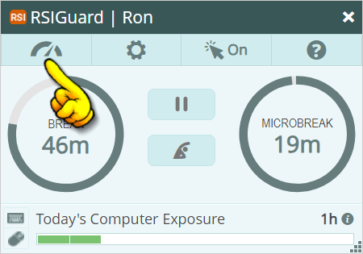
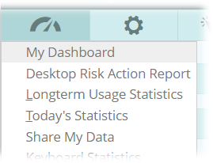
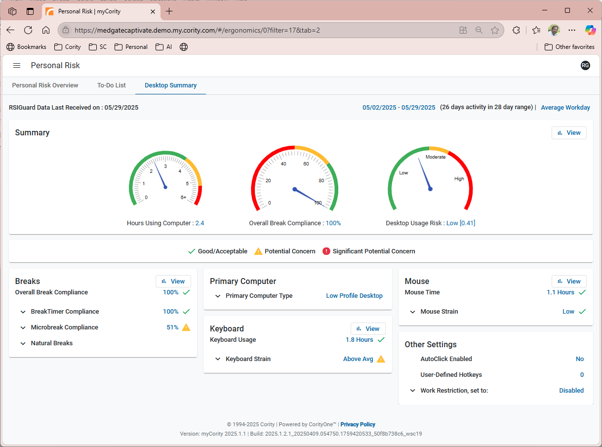

If your organization uses myCority, then 'My Dashboard' lets you visit your myCority Dashboard. There you can:
You access My Dashboard from RSIGuard via the Data button on the main window:

In some organizations, clicking opens a menu like this:

Select 'My Dashboard' to open the dashboard.
In other organizations, clicking takes you straight to the myCority Dashboard (holding CTRL while clicking gives you access to the full menu).
Your dashboard will open in your default web browser (you may be asked to log in or authenticate via SSO).
 |
|---|
View of the myCority Dashboard |
There are several tabs within My Dashboard: